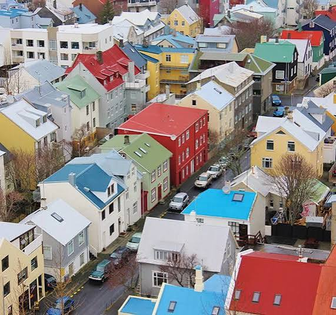

FUKUMAME'S STRENGTHS PROFILE ── 2026.06
ストレングスファインダーTOP10から、
装備の構造・強みが出る場所・
不安が強くなる時の活かし方を整理した1冊です。
SCROLL
01 ── 全体像
ふくまめさんの34資質構造を一言で表すと、「実行系の資質を5つ持ち、そこに人間関係構築力3つが乗る、優しく確実な遂行型」。
TOP10のうち 実行系が5つ──達成欲・公平性・責任感・アレンジ・目標志向。さらに最上志向（影響力）が加わるため、「並のままにしておく」というOFFスイッチが構造的に存在しにくい。これが、常に何かに追われているように感じる構造的要因です。
一方で、人間関係構築力が3つ（調和性・ポジティブ・共感性）あるため、遂行力が「対人配慮の上に乗る」形になります。仕事ぶりが「確実」かつ「気持ちよく頼める」と評価されやすいのはこの組み合わせ。プロフィールにあるEC運営・楽天モール特化のフリーランス活動とも整合性が高い構造です。
戦略的思考力は1つ（未来志向）のみ。「考え抜いてから動く」より「動きながら整える」型。これは弱みではなく特性で、行動の速さと納期遵守力の土台になっています。ただし「立ち止まる・手放す・分析し直す」判断は意識的なトリガーが必要な領域です。
02 ── 領域バランス
ストレングスファインダーの34資質は、4つの領域（実行力・人間関係構築力・影響力・戦略的思考力）に分かれます。ふくまめさんのTOP10のバランスはこう。
主役は「実行力」。TOP10の半分が実行系（達成欲・公平性・責任感・アレンジ・目標志向）。「やるって決めたら、最善のやり方で、最後まで」を、息を吸うようにやってしまう人。
そこに 人間関係構築力が3つ（調和性・ポジティブ・共感性）。「人を傷つけずに」「明るく」「相手を察して」が、実行力の上に乗っかる。だから 「お任せしたら、確実にやってくれて、しかも気持ちよく仕事できる」 人。クライアントが手放したくない理由がここ。
一方で 戦略的思考力は1つ（未来志向）のみ。「やめる・省く・分析する・じっくり考え抜く」系の資質が下位寄り。これは弱みじゃなくて、「考えるより、まず動ける」 という強みの裏返し。だけど、「立ち止まる」「手放す」判断は意識的にやる必要がある 領域でもあります。
03 ── 資質ひとつずつ
各資質に「💪 活かすヒント」「🔗 掛け合わせ」「⚠️ 注意ポイント」の3点セット。気になるところから読んでOK。
「並でいい」が、心の底からピンとこない人。すでに70点のものを90点にしたいと、自然に手が動いてしまう。EC運営の改善案件で「ここもう少し」が無限に湧き出るのは、これ。
「卓越したものにコミットする。「良い」で満足せず「最高」を追求する。強みを見出し、それを磨き上げるのが得意。質と効率にこだわり、常に改善の余地を探している。」
自然な行動・貢献：「強みに集中し、弱みにうまく対処する。質へのこだわりを持ち、個人や集団の卓越性を高め、効果を最大化するための手段を常に追求する。」
「失敗しなかった一日は、何もしなかった一日！」
── ふくまめさんの好きな言葉。最上志向＋達成欲の合金。── 同じ「もっと」、見え方が逆転する2つのモード ──
🌫 「もっとやらないと」モード：義務として「もっと」が湧く。終わりがない・足りない感が常駐 → 閉塞感になりやすい
✨ 「もっと良くなるんちゃう？」モード：発見として「もっと」が湧く。成長を実感できる・前に進んでる感がある → 楽しいになる
文法はほぼ同じ。主語が「義務」か「発見」かで温度が逆転する。最上志向そのものを止めようとするより、「もっと」が"発見"側に回る装置を1日のどこかに置く方が、ふくまめさんの装備にとって本命の救いポイント。
その装置の本命が、次に出てくる 未来志向との掛け合わせです。
「自分が熱中できるものを見つける／尊敬する人の近くにいる機会を作る／弱みは人に任せる・やらないようにする／質を上げるために量をこなす視点を持つ」（GALLUP公式）。── 楽天モール特化はまさにこの「熱中できる強み領域」。
最上志向 × 達成欲＝ゴールが移動し続ける。今日の80点が、明日は60点に見える。これが「ずっと足りない」感の正体。
公式が示す注意：「弱みの矯正に取り憑かれる／妥協や程々で良いという考え方が苦手」。── 「もうここで十分」のラインを 事前に紙に書くと、最上志向の暴走に外側からブレーキがかけられる。
対立を避けて、合意点を探す人。会議で意見が割れたとき、「で、どうしたら全員動けるか？」 に自然と頭が回る。クライアントワークで揉めごとを起こさないのは、これがあるから。
「穏やかな人。対立よりも合意点を探そうとする。全員が納得できる道を見つけることに満足感を覚える。争いごとを避け、調和のとれた環境を好む。」
自然な行動・貢献：「逆立った羽を滑らかにするように、異なる意見を調整し平和的な問題解決をもたらす。対立を避け、共通点を見出すことで協力関係を強化する。」
「対話・交渉・意見調整の経験を積む／会議や話し合いの仲介役を買って出る／「必要な対立」と「無駄な対立」を区別する／異なる立場の人の意見を引き出す質問力を磨く」（GALLUP公式）。
調和性 × 共感性＝相手の感情を察した上で、波風立てずに合意を探す。万能だけど、自分の「無理」を一番後回しにしがち。
公式が示す苦手：「誰かが不満を抱えたまま物事が進むこと」。── ここで言う"誰か"には 自分自身も含まれる。短期の波風を避け続けると、長期で自分側に大波が来る構造。
場を明るくする伝染力。本人が意識しなくても、ふくまめさんが入ると 「なんかいけそうな気がする」 雰囲気になる。お酒の場で人気者なのは絶対これ。
「楽観的で周囲を明るくする人。熱意と明るさを持ち、その前向きさが人に伝染する。どんな状況でも良い面を見つけ出し、ポジティブなエネルギーを発散する。」
自然な行動・貢献：「場を盛り上げ、能動的に周囲を元気づける。明るさを伝染させ、チームに活気とエネルギーを与える。暗い雰囲気を一変させる力がある。」
「チームのムードメーカーとして役割を担う／ポジティブなエネルギーに触れる環境を作る／難しい状況でも「明るい側面」を伝える役割を引き受ける／時にはネガティブな感情も認め、受け入れる余裕を持つ」（GALLUP公式）。
ポジティブ × 調和性＝「暗い顔を見せない」が癖になる。家族にも、クライアントにも、自分にも。「弱音を吐く許可」を自分に出すのが一番苦手。
公式が認めている活かし方として、「ネガティブな感情を認める時間」も含まれている。── 安全な相手（夫・親友・コーチ）の前では、ポジティブを意識的にOFFにする時間を確保していい。それは資質の劣化ではなく、公式推奨の使い方。
相手の感情を、言葉になる前に察する人。0歳の息子さんの「ちょっと違和感」も、夫の「言わないけど疲れてる」も、クライアントの「迷ってるサイン」も、ほぼ自動で受信してしまう。
「場の空気や人の気持ちに敏感で、感情豊か。他者の感情や状況を察知するアンテナを持ち、周りの感情の変化に自然と反応できる人。」
自然な行動・貢献：「相手の感情をよく察して対応を変える。言葉にされていない気持ちを汲み取り、寄り添うことで他者との信頼関係を構築できる。」
「感情表現を大切にする環境づくりをする／感情的に疲れたときは意識的に距離を取る／相手の感情を言葉にして確認する習慣をつける／チーム内の感情的な橋渡し役を担当する」（GALLUP公式）。── 公式自身が 「距離を取る」を活かし方として明記。
共感性 × 責任感＝相手の感情を 受信した瞬間に「自分が解決しなきゃ」 モードになる。家族の体調不良を「自分の責任」に変換しがち。
共感性は 受信機能であって、解決義務とは別物。「察した感情」と「自分が引き受ける感情」を分けることが公式定義上も推奨される使い方。受信＝引き受ける、ではない。
毎日「今日、何かやり遂げた」感がないと落ち着かない人。実践済リスト（簿記3級・積立NISA・転職・格安SIM・独立…）の長さが、達成欲の足跡そのもの。
「並外れたスタミナで目標に向かって走り続ける。長い距離も諦めずにやり遂げる力がある。働き者で、常に生産性を高めるペースを設定する。一日の終わりに何かを成し遂げたという実感がないと満足できない。」
自然な行動・貢献：「常に前進し続ける継続力があり、チームを引っ張る持続力を持つ。完了することに大きな喜びを感じる。」
「目標やタスクを小さく分割し、達成感を増やす／完了した項目をチェックするToDoリストを活用する／成果を記録し、進捗を振り返る習慣をつける／休息と健康のバランスも意識する」（GALLUP公式）。── 公式自身が 「休息」を活かし方の項目に明記している点が、達成欲持ちには重要。
達成欲 × 目標志向＝ゴールが明確だと無限に走る、ゴールがないと迷子。育休・家事育児みたいに「終わりがない営み」だと 達成感が湧きにくい構造。
公式が示す苦手：「途中で止まること・中断されること／何も達成できない日」。── 「休んだ＝達成項目」と書き換え、ToDoリストに 「休息」「家族と過ごす」「ごはんを食べる」を正式タスクとして入れると、達成欲の枠組みの中で休める。
「同じルールを、みんなに同じだけ」が腑に落ちる人。クライアントによって対応の質を変えない＝信頼が積み上がりやすい。
「個人の要望よりも、グループ全体のニーズに関心がある。公平性を重視し、誰に対しても同じ基準で接する人。明確なルールや手順があると安心する。」
自然な行動・貢献：「違いをなくして、みんな同じ状況を作り出すことに努める。規則や方針を決めて、予測しやすい職場や環境を作ることが得意。平等な扱いで信頼を得る。」
「公平性と効率性のバランスを取る／ルールの「なぜ」を説明して納得性を高める／定期的に判断や基準を振り返る習慣をもつ／特別な事情がある場合の例外ルールも設ける」（GALLUP公式）。── 公式が 「例外ルール」を活かし方として明記している。
公平性 × 責任感＝「自分だけ例外」が許せない。みんなが頑張ってるから、自分も休めないに翻訳されがち。
公式が示す苦手：「特別扱いや例外を作ること」が 苦手とされる一方、活かし方では 「例外ルールも設ける」が推奨される。── この矛盾を解く鍵は 「明文化された例外ルール」。「家族の体調不良の時は私もペースを落とす」のように、事前に書いておくと公平性に整合する。
「数年後どうなってたい」が、ふっと頭に浮かぶ人。アイスランドに行きたい、もここから来てる。未来志向は 不安が強い時期にこそ機能する資質で、後回しにすべきものではない。
「未来に思いを馳せるのが好きで、明日のことを考えるとワクワクする。可能性を見出し、「あんな未来があったらいいな」と夢見ることが得意。現状に満足せず、常に先を見ている。」
自然な行動・貢献：「先を見通して計画や提案を行う。未来の展望を提示することでチームに方向性を与え、周囲にひらめきやエネルギーをもたらす。」
「夢リスト・ビジョンボードを作り、目に見える形にする／ビジョンづくりや新しい企画の立案役を担う／未来の可能性を他の人に伝える機会を持つ／現実的な視点を持つ人と協力して実行計画を立てる」（GALLUP公式）。── 公式自身が ビジョンボードを活かし方の第一項目に置いている。この取説§06がその実装。
未来志向 × 目標志向 × 達成欲＝「夢」を「年単位の計画」に変換し、達成項目として刻める。「2026年11月発のツアー」のような具体素材があると、3資質が同時起動する。
公式が示す苦手：「現状に満足して停滞すること／可能性を狭める否定的な意見」。── 不安期に「今しんどいから未来を考えない」と未来志向をOFFにすると、ふくまめさんの装備の 主要なエネルギー源を1つ手放すことになる。逆に、視覚的なビジョン強化が現在の処理負荷を下げる構造。
引き受けたら、最後までやる人。クライアントワークで信頼を勝ち取ってきたのはこの資質。だけど 「降りる」「諦める」「他人に渡す」の選択肢が見えにくい 副作用付き。
「他者から信頼される人。決めたことに強い責任感を持ち、誠実さや正直さを大切にする。「頼まれたことは必ずやる」という心構えの持ち主。」
自然な行動・貢献：「約束を守りやり抜く姿勢で周囲に安心感を与える。信頼と行動の倫理観でチームに貢献。「自分が引き受けた」という自覚が強く、最後までやり切る。」
「NOのテンプレートを作成し、適切に断る練習をする／自分の役割や約束の範囲を明確にする／完璧主義にならず、優先順位をつける／信頼されることの価値を認識し、適切に活用する」（GALLUP公式）。── 公式自身が 「断る練習」を活かし方として明記。責任感持ちの必須スキル。
責任感 × 共感性＝家族の不調まで「自分が」モード。子どもの胃腸炎も、夫のダウンも、「私がもっと…」 に変換される。これは責任感の濫用。
公式が示す苦手：「自分の約束を守れない状況に追い込まれること」。── 言い換えると、最初から 「約束しすぎない」ことが、責任感を健全に発揮する条件。引き受け範囲は紙に書いて明文化、書いてないことは範囲外と切り分ける。
複数のタスクや人やリソースを、最適に組み合わせる人。EC運営の「画像制作×SEO×LP×広告」を 同時に回せる のは、これ。
「動かせるパーツがたくさんあると心地よい。様々な要素を最適に組み合わせることで、最高の成果を出すことを楽しむ人。異なる資源や人を柔軟に組み合わせるのが得意。」
自然な行動・貢献：「物事に効率よく対処し、成果を上げる。柔軟に、いろんな方向から対処できる。マルチタスクが得意で、様々なリソースを最適配置して生産性を高める。」
「変化自体が目的にならないよう、成果を意識する／変化のある複数のプロジェクト管理を担当する／効率化の工夫や改善案を共有する／「なぜ変えるのか」を説明して周囲を巻き込む」（GALLUP公式）。
アレンジ × 達成欲＝「組む」と「やる」の両エンジンが回る。だから 1日24時間の中に 無限にタスクを詰められてしまう構造。
アレンジは 休息・余白・無為の時間も配置対象に含められる──ここがふくまめさん装備の救いポイント。「散歩30分」「夫と話す15分」「何もしない1時間」を 1日のパズルに最初から組み込むと、後回しで消えるリスクが減る。
「で、ゴールどこ？」が口癖の人。ゴールが見えると一直線、見えないとぐったり迷子。フリーランス独立も「2024年6月」と決めて切ったから動けた。
「一つのことに打ち込む。明確な目標があると集中できて力を発揮する。何かするときは「そのゴール／目的は何か？」を意識する人。」
自然な行動・貢献：「優先順位と目的を明確化して効率的に行動する。迷いの時に方向性を示し、周囲を目標に向かって導くことができる。」
「進捗確認や目標振り返りを定期的に行う／大きな目標を小さなステップに分解する／目標の「なぜ？」を明確にしておく／チームの目標設定や方向性の明確化を担当する」（GALLUP公式）。── アイスランド行きも、小ステップ（パスポート確認→積立開始→候補ツアー比較）に分解すると動きやすい。
目標志向 × 未来志向＝「アイスランド」を 具体的な日付・予算・予定に落とせる。夢を計画にする超能力。
公式が示す苦手：「脱線や目的不明の作業／ゴールが見えない状態」。── 育児・家事・休息は構造的にゴール無しの営みなので、ストレス源になりやすい。「今日のゴール＝休む」「今日のゴール＝家族と笑う」のように、ゴール無しの時間にも仮ゴールを置くと、目標志向の枠組みで休める。
下位資質は「使わない」じゃなく「省エネで動ける場所」。ふくまめさんの場合、戦略的思考力（分析思考・収集心・学習欲・戦略性 等）と、影響力（活発性・指令性・社交性 等）が下位寄りと推測されます（全34位の詳細結果があれば、もう少し精緻にできます）。
これは 「分析で固まらず、声高に押し出さず、優しく確実にやり切る」 という、ふくまめさんのスタイルの土台。下位を上げようとせず、TOP10を信じて動けば、ちゃんと進む人。
04 ── 動ける場所
05 ── 「追われている感」を、構造から読む
「いつも何かに追われている」「立ち止まると何かが崩れそう」「ゆっくりしようと思ってもできない」──この体感は、ふくまめさんの場合、TOP10の構造上、自然に起こる反応です。性格や頑張り方の問題ではありません。
ストレングスファインダー公式の資質定義書には、各資質ごとに 「苦手なこと／嫌いなこと」が明記されています。ふくまめさんのTOP10で該当箇所を並べると、こうなります：
── 公式定義「苦手なこと」抜粋（ふくまめさんTOP10より）──
達成欲：「途中で止まること・中断されること／何も達成できない日」
目標志向：「ゴールが見えない状態／脱線や目的不明の作業／曖昧な指示」
責任感：「自分の約束を守れない状況に追い込まれること／あいまいな役割や期待値」
公平性：「特別扱いや例外を作ること／ルールが人によって変わる状況」
最上志向：「妥協や「程々で良い」という考え方／平均点で満足すること」
共感性：「感情を抑制・制限される環境／感情を無視した効率優先」
調和性：「意見が割れて収拾がつかない場面／誰かが不満を抱えたまま物事が進む」
ポジティブ：「ネガティブな人や愚痴／暗い雰囲気や重苦しい環境」
育児・引越し・繁忙・体調不良といった 「終わりが見えず・予定通りに進まず・誰かの不調を引き取り・暗くなりがちな」 状況は、ふくまめさんのTOP10の 苦手項目を一斉に踏み抜く 構造です。
つまり、不安が強くなるのは 装備の自然な警報音であって、不調でも怠けでもない。
周囲から贈られる優しい言葉──「気にしないで」「ゆっくり休んで」「考えすぎないで」──は、温度としては愛のあるメッセージですが、達成欲・目標志向・公平性・責任感の言語体系の外側からの提案なので、ふくまめさんの装備にはコマンドとして認識されにくい構造です。
「わかってる、でもできない」と感じるのは 正常な反応です。装備が「休む＝中断＝苦手項目」と処理してしまうため、休もうとするほど不安が増す逆効果が起きやすい。
同じ公式定義書には、各資質ごとに 「より生かすために」セクションがあります。ふくまめさんのTOP10で、いま効くものを引用します。「気にしないで」ではない、装備の枠組みの中で動ける形のヒントです。
── 公式「より生かすために」抜粋 ──
達成欲 →「休息と健康のバランスも意識する」
公式自身が、達成欲には休息設計が必要と明記。「休んだ」を達成項目に入れていい。
責任感 →「NOのテンプレートを作成し、適切に断る練習をする／完璧主義にならず、優先順位をつける」
「断る」は責任感の 放棄ではなく活かし方と公式が位置づけている。
共感性 →「感情的に疲れたときは意識的に距離を取る」
共感性は受信機。電源を切る時間が必要と公式自身が示している。
公平性 →「特別な事情がある場合の例外ルールも設ける」
「自分にも例外ルールを適用していい」──公平性の枠組みの中で休む権利が許されている。
ポジティブ →「時にはネガティブな感情も認め、受け入れる余裕を持つ」
ポジティブをOFFにする時間も、公式が認めている活かし方の一部。
未来志向 →「夢リスト・ビジョンボードを作り、目に見える形にする」
不安期にこそ強く働く資質。この取説の§06がその実装。
同じ意図を、ふくまめさんの装備に届く言語に翻訳すると、認知に乗りやすくなります。
ふくまめさんは 「走り続ける装備」を持って生まれてきた人です。これは強みであって、修正の対象ではありません。
不安が強くなるのは、装備が止まりたがらないから。だから 装備を止めようとするのではなく、装備の中に「休む」「断る」「距離を取る」「例外を作る」を組み込む──これが、公式定義の「より生かすために」と整合する、構造的に成立する唯一の道です。
そして構造的に──プロフィール記載の実践済リスト（簿記3級・積立NISA・未経験Webデザイナー転職・格安SIM・フリーランス独立…）は、TOP10の達成欲＋目標志向＋責任感が高密度で稼働した 客観的な実行ログです。ご自身では「まだ足りない」と感じやすい構造ですが、装備の出力としては既に十分に高い水準が出ています。
追加で何かを足すフェーズではなく、公式が示している 「より生かすために」に従って、装備の出力を整える時期に来ています。
06 ── 未来志向 × 目標志向の活かし方
未来志向の資質は、視覚的なビジョンと、時間軸での区切り（タイムバケット）の2つで活性化します。プロフィール記載の「行きたい国」を素材に、資質的な活かし方を時間軸で整理しました。
プロフィール記載と資質構造から読み取れるのは、ふくまめさんは未来志向（第7位）を持っているのに、その資質を今ほとんど稼働させられていない可能性です。「ワクワクする未来を想像する時間」そのものが、構造的に圧迫されてしまっている。
原因はおそらく、TOP10に並んでいる実行系5資質＋共感性＋責任感が常時フル稼働しているため、未来志向が起動する「余白の時間」がなくなっているからです。「目の前の処理」と「人の感情の受信」で1日のスロットが埋まり、未来を眺めるスペースが残らない構造。
ここで提案したいのが、「今日の完成」と「未来の感情の先取り」を1セットで運用する使い方です。
今日の完成（達成欲）── 1日の終わりに「今日やったこと」を可視化する。仕事・家事・育児・自分のケアを並べて、達成欲を満たす。
未来の感情の先取り（未来志向）── そのすぐ後に、「アイスランドのオーロラを見ている時の自分の気持ち」を30秒〜1分、目を閉じてイメージする。空気の冷たさ、見上げた時の感動、「来てよかった」と思っている自分の表情。感情の質感を、今この瞬間に味わう。
これがなぜ効くか──未来志向の本質は「未来の出来事を予測する」ではなく、「未来の感情を、今ここで先取りして体験する」ことだからです。ビジョンボードや夢リストが資質公式で推奨されるのも、視覚化を通じて「その時の感情」が今この瞬間に湧き上がる仕掛けだから。
達成欲と未来志向を毎日セットで動かすと、「今日も整えた」という完了感と、「行きたい未来がちゃんとある」という安心感が同時に得られる。これは「いつも何かに追われている」という体感に対する、構造的な解毒剤になりやすい組み合わせです。
未来を「いつかの宿題」にせず、毎日数分だけ、今の自分を支える栄養として使う。これがふくまめさんのTOP10の中で、いちばん未活用なリソースの活かし方です。
達成欲×未来志向の「今日完成＋未来感情先取り」と並んで、もうひとつ重要な組み合わせが 最上志向 × 未来志向 です。
「いつも何かに追われている」感の根に 閉塞感があるとしたら、それは 最上志向が"発見モード"ではなく"義務モード"で稼働しているからだと読み取れます。
最上志向（もっとよくなるんちゃう？の発見）──「今は途中」を肯定的に味わう資質。
未来志向（先のビジョン）──「向かっている先がある」を可視化する資質。
この2つが手を組むと、「今は途中、確実にそこへ向かってる」という"成長を実感している感覚"が生まれます。これは閉塞感の正反対の感情。
逆に、未来志向がOFFのまま最上志向だけが回っていると、「終わりがない・足りない」だけが残り、「もっとやらないと」モードに固定されます。
ふくまめさんの今の体感が「閉塞感」に近いとしたら、必要なのは 「もっと頑張る」ではなく、「未来志向を起動して、最上志向を発見モードに戻す」──この順番が大事です。
具体的には、ビジョンボード（§06）の写真を眺める時に、「未来のあそこから今を見たら、今はどこまで進んでる？」と1日1回だけ問う習慣を置く。これだけで最上志向の「もっと」が、義務から発見に切り替わります。
── アイスランドの、いろんな表情 ──

視覚刺激で未来志向が起動。所要時間3分・コストゼロ・達成リスト1項目分。
具体的な「いつ・いくら・誰と」を決めると、目標志向が稼働する。決めることでむしろ 「いつか行けるかな」の不安が減る 構造。
素材として既に 「2026年11月発・お一人様歓迎のオーロラ＆世界遺産ツアー」 を確認済とのこと。これは未来志向の資質的に 「現実の選択肢として置く」だけで価値がある 情報です。
プロフィール記載の6カ国を、ライフステージで分類するとアレンジ資質がフィットしやすい。分類すること自体が、漠然とした未来を整える行為です。
── ビジョンボード（6カ国カード） ──
餃子 ・ パン ・ カレー ・ モンブラン
プロフィール記載。ご褒美設計に組み込みやすい素材。
「失敗しなかった一日は、
何もしなかった一日！」
達成欲＋最上志向の世界観を端的に表す言葉。
07 ── 関係者向け資質ガイド
資質構造から見た、家族・クライアントとの関係性で起きやすいパターンと、双方が消耗しない関わり方の整理。
この資料は、ふくまめさんを 変える ためのものではなく、
装備の 使い方を整理する ためのプロファイリングです。
TOP10の構造上、「走り続ける装備」はすでに高い完成度で揃っている状態。
追加で必要なのは、公式が明記している 「休息」「断る練習」「距離を取る」「例外ルール」 といった、装備を健全に運用するための周辺ツールです。
不安が強くなる時期は、性格でも気の持ちようでもなく、5つの実行系資質＋共感性が同時に出力を上げている構造。
そう理解しておくだけで、自分への扱い方が変わります。
本資料は2026年6月時点のプロフィール記載情報＋ストレングスファインダーTOP10をベースとした構造分析です。
セッションを経ていない仮版のため、本人の体験・価値観のヒアリングを経た上で、より精度の高い版に更新可能です。
寄り添い型 個性診断士 おけもん